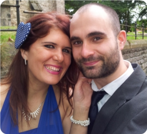

We are Ashleigh and Paul, Independent AVON Representatives and Sales Leaders from Newcastle Upon Tyne.
We began selling AVON in 2012 as Independent Sales Representatives, to save money towards our wedding.
Soon we discovered the network marketing side to AVON and the great earning potential it presented. We started building our own team as Independent Sales Leaders, earning commission on our representatives and helping them thrive.
Now we have one of the fastest growing teams in the North East. Every day we sign up new AVON representatives from all walks of life. The extra income helps them pay for essential day-to-day things, as well as the luxuries they want.
If you want to earn extra money with AVON, we can help you get started. You can choose to sell AVON to friends, family or neighbours as an AVON representative, or you can build your own team as an AVON sales leader.
We wish you every success with your new business!
Ashleigh & Paulx